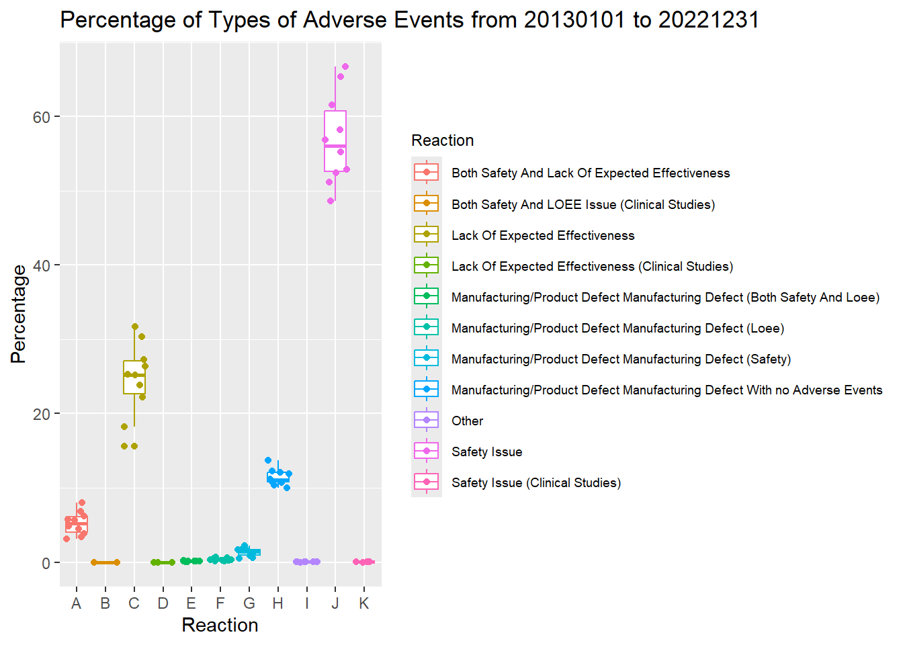
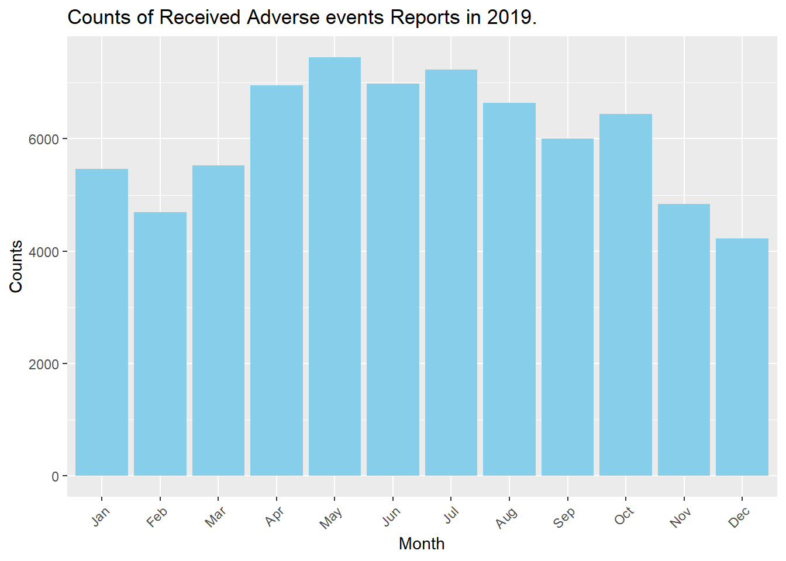
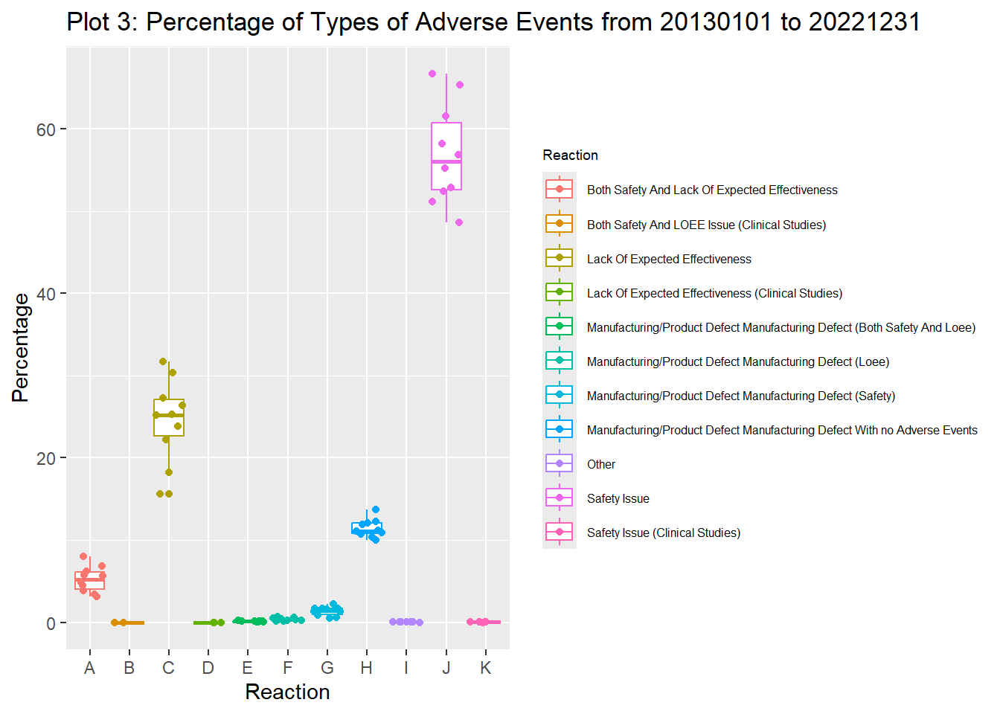
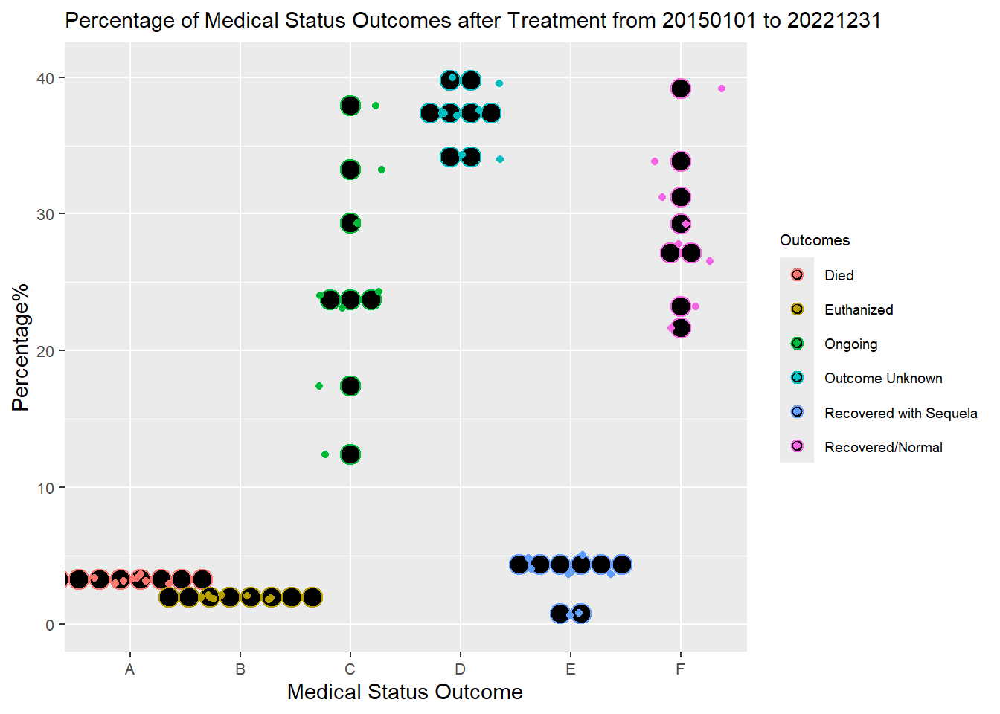

#shiny::runGitHub("jiayanglu/Project2")Project2
Install packages needed in the following code chunks.
#options(repos = "https://cloud.r-project.org")
#install.packages(c("shiny", "tidyverse", "jsonlite", "ggplot2", "plotly"))
library(shiny)Warning: package 'shiny' was built under R version 4.3.3library(tidyverse)Warning: package 'tidyverse' was built under R version 4.3.3Warning: package 'ggplot2' was built under R version 4.3.3Warning: package 'readr' was built under R version 4.3.3── Attaching core tidyverse packages ──────────────────────── tidyverse 2.0.0 ──
✔ dplyr 1.1.4 ✔ readr 2.1.5
✔ forcats 1.0.0 ✔ stringr 1.5.1
✔ ggplot2 3.5.1 ✔ tibble 3.2.1
✔ lubridate 1.9.3 ✔ tidyr 1.3.1
✔ purrr 1.0.2
── Conflicts ────────────────────────────────────────── tidyverse_conflicts() ──
✖ dplyr::filter() masks stats::filter()
✖ dplyr::lag() masks stats::lag()
ℹ Use the conflicted package (<http://conflicted.r-lib.org/>) to force all conflicts to become errorslibrary(jsonlite)
Attaching package: 'jsonlite'
The following object is masked from 'package:purrr':
flatten
The following object is masked from 'package:shiny':
validatelibrary(ggplot2)
library(plotly)Warning: package 'plotly' was built under R version 4.3.3
Attaching package: 'plotly'
The following object is masked from 'package:ggplot2':
last_plot
The following object is masked from 'package:stats':
filter
The following object is masked from 'package:graphics':
layoutopenFDA API endpoint for animal drug adverse event
Queries from openFDA API endpoint for animal drug adverse event reports are listed below.
Reports over time
This is a query about how many reports regarding to any undesirable experience associated with the use of an animal drug, including adverse reactions, product use errors, and product/manufacturing problems, within a date range in the openFDA API endpoint for the animal drug adverse event reports.
animal_API_reports_over_time <- function(start_date, end_date){
#construct URL
base_URL <- "https://api.fda.gov/"
endpoint <- "animalandveterinary/event.json"
query_reports_over_time <- "?count=original_receive_date"
full_URL <- paste0(base_URL, endpoint, query_reports_over_time)
#read in data
output_API <- fromJSON(full_URL)
reports_over_time_data <- as_tibble(output_API$results)
#find the date boundaries from quried data
earliest_date <- min(ymd(reports_over_time_data$time))
latest_date <- max(ymd(reports_over_time_data$time))
#define a boundry that user can query
if (ymd(start_date) < earliest_date | ymd(end_date) > latest_date){
message <- paste0("ERROR: Please pass a date between ", earliest_date, " and ", latest_date, " in the format of YYYYMMDD", ".")
stop(message)
} else {
#construct URL according to input dates
query_receivedate <- "?search=original_receive_date:"
query_date_range <- paste0("[", start_date, "+TO+", end_date, "]&count=original_receive_date")
full_URL <- paste0(base_URL, endpoint, query_receivedate, query_date_range)
output_API <- fromJSON(full_URL)
reports_over_time_data <- as_tibble(output_API$results)
reports_over_time_data <- reports_over_time_data |>
mutate(receivedate_ymd = ymd(reports_over_time_data$time)) |>
select(receivedate_ymd, count) |>
filter(receivedate_ymd >= ymd(start_date) & receivedate_ymd <= ymd(end_date))
query_name <- paste0("query_", start_date, "_to_", end_date)
return(setNames(list(earliest_date, latest_date, reports_over_time_data),
c("earliest_date", "latest_date", query_name)))
}
}
#animal_API_reports_over_time(20150101,20221231)Who reports
This is a query about primary reporter who holds or provides the most pertinent information related to the adverse event report within a date range in the openFDA API endpoint for the animal drug adverse event reports.
#same logic from the first code chunk
animal_API_who_reports <- function(start_date, end_date){
base_URL <- "https://api.fda.gov/"
endpoint <- "animalandveterinary/event.json"
query_who_reports <- "?count=original_receive_date"
full_URL <- paste0(base_URL, endpoint, query_who_reports)
output_API <- fromJSON(full_URL)
who_reports_data <- as_tibble(output_API$results)
earliest_date <- min(ymd(who_reports_data$time))
latest_date <- max(ymd(who_reports_data$time))
if (ymd(start_date) < earliest_date | ymd(end_date) > latest_date){
message <- paste0("ERROR: Please pass a date between ", earliest_date, " and ", latest_date, " in the format of YYYYMMDD", ".")
stop(message)
} else {
query_receivedate <- "?search=original_receive_date:"
query_date_range <- paste0("[", start_date, "+TO+", end_date, "]&count=primary_reporter.exact")
full_URL <- paste0(base_URL, endpoint, query_receivedate, query_date_range)
output_API <- fromJSON(full_URL)
who_reports_data <- as_tibble(output_API$results)
query_name <- paste0("query_", start_date, "_to_", end_date)
return(setNames(list(earliest_date, latest_date, who_reports_data),
c("earliest_date", "latest_date", query_name)))
}
}
#animal_API_who_reports(20150101, 20221231) Types of report
This is a query about the types of adverse events in the report within a date range in the openFDA API endpoint for the animal drug adverse event reports.
#same logic from the first code chunk
animal_API_types_of_reports <- function(start_date, end_date){
base_URL <- "https://api.fda.gov/"
endpoint <- "animalandveterinary/event.json"
query_types_of_reports <- "?count=original_receive_date"
full_URL <- paste0(base_URL, endpoint, query_types_of_reports)
output_API <- fromJSON(full_URL)
types_of_reports_data <- as_tibble(output_API$results)
earliest_date <- min(ymd(types_of_reports_data$time))
latest_date <- max(ymd(types_of_reports_data$time))
if (ymd(start_date) < earliest_date | ymd(end_date) > latest_date){
message <- paste0("ERROR: Please pass a date between ", earliest_date, " and ", latest_date, " in the format of YYYYMMDD", ".")
stop(message)
} else {
query_receivedate <- "?search=original_receive_date:"
query_date_range <- paste0("[", start_date, "+TO+", end_date, "]&count=type_of_information.exact")
full_URL <- paste0(base_URL, endpoint, query_receivedate, query_date_range)
output_API <- fromJSON(full_URL)
types_of_reports_data <- as_tibble(output_API$results)
query_name <- paste0("query_", start_date, "_to_", end_date)
return(setNames(list(earliest_date, latest_date, types_of_reports_data),
c("earliest_date", "latest_date", query_name)))
}
}
#animal_API_types_of_reports(20150101, 20221231) Animal breeds
This is a query about animal breeds in the adverse events report within a date range in the openFDA API endpoint for the animal drug adverse event reports.
#same logic from the first code chunk
animal_API_animal_breeds <- function(start_date, end_date){
base_URL <- "https://api.fda.gov/"
endpoint <- "animalandveterinary/event.json"
query_animal_breeds <- "?count=original_receive_date"
full_URL <- paste0(base_URL, endpoint, query_animal_breeds)
output_API <- fromJSON(full_URL)
animal_breeds_data <- as_tibble(output_API$results)
earliest_date <- min(ymd(animal_breeds_data$time))
latest_date <- max(ymd(animal_breeds_data$time))
if (ymd(start_date) < earliest_date | ymd(end_date) > latest_date){
message <- paste0("ERROR: Please pass a date between ", earliest_date, " and ", latest_date, " in the format of YYYYMMDD", ".")
stop(message)
} else {
query_receivedate <- "?search=original_receive_date:"
query_date_range <- paste0("[", start_date, "+TO+", end_date, "]&count=animal.breed.breed_component.exact")
full_URL <- paste0(base_URL, endpoint, query_receivedate, query_date_range)
output_API <- fromJSON(full_URL)
animal_breeds_data <- as_tibble(output_API$results)
query_name <- paste0("query_", start_date, "_to_", end_date)
return(setNames(list(earliest_date, latest_date, animal_breeds_data),
c("earliest_date", "latest_date", query_name)))
}
}
#animal_API_animal_breeds(20150101, 20221231) Reactions
This is a query about reactions in the adverse events report within a date range in the openFDA API endpoint for the animal drug adverse event reports.
#same logic from the first code chunk
animal_API_reactions <- function(start_date, end_date){
base_URL <- "https://api.fda.gov/"
endpoint <- "animalandveterinary/event.json"
query_reactions <- "?count=original_receive_date"
full_URL <- paste0(base_URL, endpoint, query_reactions)
output_API <- fromJSON(full_URL)
reactions_data <- as_tibble(output_API$results)
earliest_date <- min(ymd(reactions_data$time))
latest_date <- max(ymd(reactions_data$time))
if (ymd(start_date) < earliest_date | ymd(end_date) > latest_date){
message <- paste0("ERROR: Please pass a date between ", earliest_date, " and ", latest_date, " in the format of YYYYMMDD", ".")
stop(message)
} else {
query_receivedate <- "?search=original_receive_date:"
query_date_range <- paste0("[", start_date, "+TO+", end_date, "]&count=reaction.veddra_term_name.exact")
full_URL <- paste0(base_URL, endpoint, query_receivedate, query_date_range)
output_API <- fromJSON(full_URL)
reactions_data <- as_tibble(output_API$results)
query_name <- paste0("query_", start_date, "_to_", end_date)
return(setNames(list(earliest_date, latest_date, reactions_data),
c("earliest_date", "latest_date", query_name)))
}
}
#animal_API_reactions(20150101, 20221231) Outcomes
This is a query about animal’s medical status after treatment within a date range in the openFDA API endpoint for the animal drug adverse event reports.
#same logic from the first code chunk
animal_API_outcomes <- function(start_date, end_date){
base_URL <- "https://api.fda.gov/"
endpoint <- "animalandveterinary/event.json"
query_outcomes <- "?count=original_receive_date"
full_URL <- paste0(base_URL, endpoint, query_outcomes)
output_API <- fromJSON(full_URL)
outcomes_data <- as_tibble(output_API$results)
earliest_date <- min(ymd(outcomes_data$time))
latest_date <- max(ymd(outcomes_data$time))
if (ymd(start_date) < earliest_date | ymd(end_date) > latest_date){
message <- paste0("ERROR: Please pass a date between ", earliest_date, " and ", latest_date, " in the format of YYYYMMDD", ".")
stop(message)
} else {
query_receivedate <- "?search=original_receive_date:"
query_date_range <- paste0("[", start_date, "+TO+", end_date, "]&count=outcome.medical_status.exact")
full_URL <- paste0(base_URL, endpoint, query_receivedate, query_date_range)
output_API <- fromJSON(full_URL)
outcomes_data <- as_tibble(output_API$results)
query_name <- paste0("query_", start_date, "_to_", end_date)
return(setNames(list(earliest_date, latest_date, outcomes_data),
c("earliest_date", "latest_date", query_name)))
}
}
#animal_API_outcomes(20150101, 20221231) openFDA API endpoint for adverse drug events
Queries from openFDA API endpoint for adverse drug events are listed below.
Reports over time
This is a query about how many reports regarding to any undesirable experience associated with the use of an animal drug, including serious drug side effects, product use errors, product quality problems, and therapeutic failures, within a date range in the openFDA API endpoint for the adverse drug events.
#here, a different endpoint is queried, same logic as the first code chunk
drug_API_reports_over_time <- function(start_date, end_date){
base_URL <- "https://api.fda.gov/"
endpoint <- "drug/event.json"
query_reports_over_time <- "?count=receivedate"
full_URL <- paste0(base_URL, endpoint, query_reports_over_time)
output_API <- fromJSON(full_URL)
reports_over_time_data <- as_tibble(output_API$results)
earliest_date <- min(ymd(reports_over_time_data$time))
latest_date <- max(ymd(reports_over_time_data$time))
if (ymd(start_date) < earliest_date | ymd(end_date) > latest_date){
message <- paste0("ERROR: Please pass a date between ", earliest_date, " and ", latest_date, " in the format of YYYYMMDD", ".")
stop(message)
} else {
query_receivedate <- "?search=receivedate:"
query_date_range <- paste0("[", start_date, "+TO+", end_date, "]&count=receivedate")
full_URL <- paste0(base_URL, endpoint, query_receivedate, query_date_range)
output_API <- fromJSON(full_URL)
reports_over_time_data <- as_tibble(output_API$results)
reports_over_time_data <- reports_over_time_data |>
mutate(receivedate_ymd = ymd(reports_over_time_data$time)) |>
select(receivedate_ymd, count) |>
filter(receivedate_ymd >= ymd(start_date) & receivedate_ymd <= ymd(end_date))
query_name <- paste0("query_", start_date, "_to_", end_date)
return(setNames(list(earliest_date, latest_date, reports_over_time_data),
c("earliest_date", "latest_date", query_name)))
}
}
#drug_API_reports_over_time(20150101,20221231)Who reports
This is a query about category of individual who submittd the report within a date range in the openFDA API endpoint for the animal drug adverse event reports.
#same logic as the previous code chunk
drug_API_who_reports <- function(start_date, end_date){
base_URL <- "https://api.fda.gov/"
endpoint <- "drug/event.json"
query_who_reports <- "?count=receivedate"
full_URL <- paste0(base_URL, endpoint, query_who_reports)
output_API <- fromJSON(full_URL)
who_reports_data <- as_tibble(output_API$results)
earliest_date <- min(ymd(who_reports_data$time))
latest_date <- max(ymd(who_reports_data$time))
if (ymd(start_date) < earliest_date | ymd(end_date) > latest_date){
message <- paste0("ERROR: Please pass a date between ", earliest_date, " and ", latest_date, " in the format of YYYYMMDD", ".")
stop(message)
} else {
query_receivedate <- "?search=receivedate:"
query_date_range <- paste0("[", start_date, "+TO+", end_date, "]&count=primarysource.qualification")
full_URL <- paste0(base_URL, endpoint, query_receivedate, query_date_range)
output_API <- fromJSON(full_URL)
who_reports_data <- as_tibble(output_API$results)
query_name <- paste0("query_", start_date, "_to_", end_date)
return(setNames(list(earliest_date, latest_date, who_reports_data),
c("earliest_date", "latest_date", query_name)))
}
}
# 1: Physician; 2: Pharmacist; 3: Other health professional; 4: Lawyer; 5: Consumer or non-health professional
#drug_API_who_reports(20150101, 20221231)General query function
This is a universal query code chunk to query from either “animalandveterinary” or “drug” endpoint of openFDA API. There are total 6 different queries to get 6 different types of data from “animalandveterinary” endpoint, which are “Reports over time”(query=1), “Who reports”(query=2), “Types of report”(query=3), “Animal breeds”(query=4), “Reactions”(query=5), and “Outcomes”(query=6). There are total 2 different queries to get 2 different types of data from “drug” endpoint, which are “Reports over time”(query=1), “Who reports”(query=2).
endpoint_API_query <- function(endpoint, query, start_date, end_date){
if (!endpoint %in% c("animalandveterinary", "drug")){
message <- paste0("ERROR: Please choose endpoint 'animalandveterinary' or 'drug'.")
stop(message)
}
#construct URL
base_URL <- "https://api.fda.gov/"
event <- "/event.json"
count <- "?count="
receive_date <- if (endpoint == "drug") "receivedate" else "original_receive_date"
full_URL <- paste0(base_URL, endpoint, event, count, receive_date)
#read in data
output_API <- fromJSON(full_URL)
receivedate_data <- as_tibble(output_API$results)
earliest_date <- min(ymd(receivedate_data$time))
latest_date <- max(ymd(receivedate_data$time))
#find date boundaries from the database
if (ymd(start_date) < earliest_date | ymd(end_date) > latest_date){
message <- paste0("ERROR: Please pass a date between ", earliest_date, " and ", latest_date, " in the format of YYYYMMDD", ".")
stop(message)
} else {
#extract different types of data
if (endpoint == "animalandveterinary"){
if (!query %in% c(1,2,3,4,5,6)){
message <- paste0("ERROR: Please choose query from 1 to 6.")
stop(message)
} else if (query == 1){
query_date_range <- paste0(":[", start_date, "+TO+", end_date, "]&count=", receive_date)
} else if (query == 2){
query_code <- "primary_reporter.exact"
query_date_range <- paste0(":[", start_date, "+TO+", end_date, "]&count=", query_code)
} else if (query == 3){
query_code <- "type_of_information.exact"
query_date_range <- paste0(":[", start_date, "+TO+", end_date, "]&count=", query_code)
} else if (query == 4){
query_code <- "animal.breed.breed_component.exact"
query_date_range <- paste0(":[", start_date, "+TO+", end_date, "]&count=", query_code)
} else if (query == 5){
query_code <- "reaction.veddra_term_name.exact"
query_date_range <- paste0(":[", start_date, "+TO+", end_date, "]&count=", query_code)
} else if (query == 6){
query_code <- "outcome.medical_status.exact"
query_date_range <- paste0(":[", start_date, "+TO+", end_date, "]&count=", query_code)
}
} else if (endpoint == "drug"){
if(!query %in% c(1,2)){
message <- paste0("ERROR: Please choose query from 1 to 2.")
stop(message)
} else if (query == 1){
query_date_range <- paste0(":[", start_date, "+TO+", end_date, "]&count=", receive_date)
} else if (query == 2){
query_code <- "primarysource.qualification"
query_date_range <- paste0(":[", start_date, "+TO+", end_date, "]&count=", query_code)
}
}
#constrict URL according to inputs
search <- "?search="
full_URL <- paste0(base_URL, endpoint, event, search, receive_date, query_date_range)
output_API <- fromJSON(full_URL)
query_data <- as_tibble(output_API$results)
if (query == 1){
query_data <- query_data |>
mutate(receivedate_ymd = ymd(query_data$time)) |>
select(receivedate_ymd, count) |>
filter(receivedate_ymd >= ymd(start_date) & receivedate_ymd <= ymd(end_date))
}
query_name <- paste0("query_", endpoint, "_", query, "_", start_date, "_to_", end_date)
return(setNames(list(earliest_date, latest_date, query_data),
c("earliest_date", "latest_date", query_name)))
}
}
#this is the example that user can query different types of data using this general function
# endpoint_API_query("animalandveterinary",1,20150101,20221231)
# endpoint_API_query("animalandveterinary",2,20150101,20221231)
# endpoint_API_query("animalandveterinary",3,20150101,20221231)
# endpoint_API_query("animalandveterinary",4,20150101,20221231)
# endpoint_API_query("animalandveterinary",5,20150101,20221231)
# endpoint_API_query("animalandveterinary",6,20150101,20221231)
#
# endpoint_API_query("drug",1,20150101,20221231)
# endpoint_API_query("drug",2,20150101,20221231)Summarize the data
Contingency tables for “Who reports” queries
from openFDA API “animalandveterinary” endpoint
Below is the “Who reports” contingency table from 2022-01-01 to 2023-01-01 queried from openFDA API “animalandveterinary” endpoint.
fun_contingency_table1 <- function(start_date, end_date){
#data query
who_reports_animal <- endpoint_API_query("animalandveterinary",2,start_date,end_date)
who_reports_animal <- who_reports_animal[[3]] |>
rename(primarysource = term)
#create a function to include a title
print_tibble_with_title <- function(tbl, title) {
cat(title, "\n")
print(tbl)
}
#print a contigency table with a title
print_tibble_with_title(who_reports_animal, paste0("<Who reports> Contingency Table: Primary Sources of Adverse Events Report from ", start_date, " to ", end_date, " queried from openFDA <animalandveterinary> endpoint."))
}
#this is an example of how to use this function to create a contingency table
start_date <- 20150101
end_date <- 20221231
fun_contingency_table1(start_date, end_date)<Who reports> Contingency Table: Primary Sources of Adverse Events Report from 20150101 to 20221231 queried from openFDA <animalandveterinary> endpoint.
# A tibble: 7 × 2
primarysource count
<chr> <int>
1 Animal Owner 191807
2 Other 137748
3 Veterinarian 129324
4 Other Health Care Professional 93942
5 Patient 1662
6 Unknown 552
7 Physician 59from openFDA API “drug” endpoint
Below is the “Who reports” contingency table from 2022-01-01 to 2023-01-01 queried from openFDA API “drug” endpoint. The meanings of the values of variable term in the original output: 1 represents “Physician”, 2 represents “Pharmacist”, 3 represents “Other health professional”, 4 represents “Lawyer”, 5 represents “Consumer or non-health”. I replaced these number values with their corresponding meanings in the final contingency table and added a title corresponding to the queried date range.
fun_contingency_table2 <- function(start_date,end_date){
#data query
who_reports_drug <- endpoint_API_query("drug",2,start_date,end_date)
#define variable term
who_reports_drug <- who_reports_drug[[3]] |>
mutate(primarysource = as.character(term)) |>
mutate(primarysource = case_when(
term == 1 ~ "Physician",
term == 2 ~ "Pharmacist",
term == 3 ~ "Other health professional",
term == 4 ~ "Lawyer",
term == 5 ~ "Consumer or non-health",
TRUE ~ as.character(primarysource)
)) |>
select(primarysource, count)
print_tibble_with_title <- function(tbl, title) {
cat(title, "\n")
print(tbl)
}
print_tibble_with_title(who_reports_drug, paste0("<Who reports> Contingency Table: Primary Sources of Adverse Events Report from ", start_date, " to ", end_date, " queried from openFDA <drug> endpoint."))
}
#this is an example of how to use this function to create a contingency table
start_date <- 20150101
end_date <- 20221231
fun_contingency_table2(start_date, end_date)<Who reports> Contingency Table: Primary Sources of Adverse Events Report from 20150101 to 20221231 queried from openFDA <drug> endpoint.
# A tibble: 5 × 2
primarysource count
<chr> <int>
1 Consumer or non-health 5132197
2 Physician 2348271
3 Other health professional 2139693
4 Pharmacist 769378
5 Lawyer 393284Numerical summaries
for “Type of Report” queries
This is the “Type of Report” numerical summaries for percentages of the types of adverse events across 10 years (2013-2022) queried from openFDA API “animalandveterinary” endpoint.
fun_summary1 <- function(start_date, end_date){
start_year <- substr(start_date, 1, 4)
end_year <- substr(end_date, 1, 4)
#cycle through all years from input and calculate relative percentages from each year
for(i in start_year:end_year){
start_date2 <- as.numeric(paste0(i, "0101"))
end_date2 <- as.numeric(paste0(i, "1231"))
type_of_report_animal <- endpoint_API_query("animalandveterinary",3,start_date2,end_date2)
type_of_report_animal <- type_of_report_animal[[3]] |>
rename(reaction = term) |>
mutate(percentage = count / sum(count) * 100) |>
select(reaction, percentage, count)
assign(paste0("type_of_report_animal_", i), type_of_report_animal)
}
#combine data from all years together
data_frames <- mget(paste0("type_of_report_animal_", start_year:end_year))
type_of_report_animal_year_range <- bind_rows(data_frames, .id = "source_year")
#calculate numerical summaries for percentages for all years
type_of_report_animal_year_range_stat <- type_of_report_animal_year_range |>
group_by(reaction) |>
summarize(
across(percentage, .fns = list(
"mean" = mean,
"median" = median,
"var" = var,
"sd" = sd,
"IQR" = IQR
), .names = "{.fn}_{.col}"))
title <- paste0("Summary statistics for percentage of types of adverse events from ", start_date, " to ", end_date, " queried from openFDA <animalandveterinary> endpoint." )
print_tibble_with_title <- function(tbl, title) {
cat(title, "\n")
print(tbl)
}
print_tibble_with_title(type_of_report_animal_year_range_stat, title)
}
#this is an example of how to use this function to generate numerical summaries of percentages
start_date <- 20150101
end_date <- 20221231
fun_summary1(start_date, end_date)Summary statistics for percentage of types of adverse events from 20150101 to 20221231 queried from openFDA <animalandveterinary> endpoint.
# A tibble: 11 × 6
reaction mean_percentage median_percentage var_percentage sd_percentage
<chr> <dbl> <dbl> <dbl> <dbl>
1 Both Safety A… 0.00141 0.00141 3.26e-12 0.00000180
2 Both Safety A… 5.56 5.71 2.30e+ 0 1.52
3 Lack Of Expec… 26.5 25.8 1.01e+ 1 3.18
4 Lack Of Expec… 0.00138 0.00138 1.31e- 9 0.0000363
5 Manufacturing… 0.121 0.148 4.41e- 3 0.0664
6 Manufacturing… 0.333 0.286 2.13e- 2 0.146
7 Manufacturing… 1.41 1.44 2.55e- 1 0.505
8 Manufacturing… 11.4 11.1 1.38e+ 0 1.18
9 Other 0.0270 0.0293 1.52e- 4 0.0123
10 Safety Issue 54.6 54.1 1.75e+ 1 4.19
11 Safety Issue … 0.0153 0.0166 9.34e- 5 0.00967
# ℹ 1 more variable: IQR_percentage <dbl>for “Outcomes” queries
This is the “Outcomes” numerical summaries for percentages of medical status outcomes across 10 years (2013-2022) queried from openFDA API “animalandveterinary” endpoint.
fun_summary2 <- function(start_date, end_date){
start_year <- substr(start_date, 1, 4)
end_year <- substr(end_date, 1, 4)
#cycle through all years from input and calculate relative percentages from each year
for(i in start_year:end_year){
start_date2 <- as.numeric(paste0(i, "0101"))
end_date2 <- as.numeric(paste0(i, "1231"))
outcomes_animal <- endpoint_API_query("animalandveterinary",6,start_date2,end_date2)
outcomes_animal <- outcomes_animal[[3]] |>
rename(medical.status.outcome = term) |>
mutate(percentage = count / sum(count) * 100) |>
select(medical.status.outcome, percentage, count)
assign(paste0("outcomes_animal_", i), outcomes_animal)
}
#combine data from all years together
data_frames <- mget(paste0("outcomes_animal_", start_year:end_year))
outcomes_animal_year_range <- bind_rows(data_frames, .id = "source_year")
#calculate numerical summaries for percentages for all years
outcomes_animal_year_range_stat <- outcomes_animal_year_range |>
group_by(medical.status.outcome) |>
summarize(
across(percentage, .fns = list(
"mean" = mean,
"median" = median,
"var" = var,
"sd" = sd,
"IQR" = IQR
), .names = "{.fn}_{.col}"))
title <- paste0("Summary statistics for percentage by medical status outcome from ", start_date, " to ", end_date, " queried from openFDA <animalandveterinary> endpoint." )
print_tibble_with_title <- function(tbl, title) {
cat(title, "\n")
print(tbl)
}
print_tibble_with_title(outcomes_animal_year_range_stat, title)
}
#this is an example of how to use this function to generate numerical summaries of percentages
start_date <- 20150101
end_date <- 20221231
fun_summary2(start_date, end_date)Summary statistics for percentage by medical status outcome from 20150101 to 20221231 queried from openFDA <animalandveterinary> endpoint.
# A tibble: 6 × 6
medical.status.outcome mean_percentage median_percentage var_percentage
<chr> <dbl> <dbl> <dbl>
1 Died 3.23 3.23 0.0492
2 Euthanized 1.97 1.96 0.0136
3 Ongoing 25.2 24.2 67.8
4 Outcome Unknown 37.2 37.4 4.57
5 Recovered with Sequela 3.31 3.73 2.80
6 Recovered/Normal 29.1 28.5 32.4
# ℹ 2 more variables: sd_percentage <dbl>, IQR_percentage <dbl>Plots
Plot 1
Based on the “Reports over time” query for how many adverse reports regarding to any undesirable experience associated with the use of an animal drug, including adverse reactions, product use errors, and product/manufacturing problems, across 8 years (2015-2022) in the openFDA API endpoint for the animal drug adverse event reports, we can visualize it with bar plot. User can also select a specific year within 2015-2022, and then visualize the counts by each month with bar plot.
fun_plot1_1 <- function(endpoint, start_date, end_date){
#query data from the general query function
reports_over_time_animal <- endpoint_API_query(endpoint,1,start_date,end_date)[[3]]
#calculate summary counts by each year
reports_over_time_animal_year <- reports_over_time_animal |>
group_by(year = lubridate::year(receivedate_ymd)) |>
summarise(count = sum(count)) |>
mutate(year = as.character(year))
reports_over_time_animal_month <- reports_over_time_animal |>
group_by(year = year(receivedate_ymd), month = month(receivedate_ymd, label = TRUE)) |>
summarise(count = sum(count))
reports_over_time_animal_plot <- reports_over_time_animal_month |>
mutate(year = as.character(year))
#create a bar plot using the data above
plot1_1 <- ggplot(reports_over_time_animal_year, aes(year, count)) +
geom_bar(stat = "identity", fill = "skyblue", width = 0.5) +
labs(x = "Year", y = "Counts") +
ggtitle(paste0("Counts of Received Adverse events Reports from ", start_date, " to ", end_date, ".")) +
theme(axis.text.x = element_text(angle = 45, hjust = 1))
return(plot1_1)
}
#example of using this function
endpoint <- "drug"
start_date <- 20150101
end_date <- 20221231
fun_plot1_1(endpoint, start_date, end_date)`summarise()` has grouped output by 'year'. You can override using the
`.groups` argument.
#create another function to further calculate summary counts from each month
fun_plot1_2 <- function(endpoint, start_date, end_date, input_year){
reports_over_time_animal <- endpoint_API_query(endpoint,1,start_date,end_date)[[3]]
#calculate summary counts by each month
reports_over_time_animal_year <- reports_over_time_animal |>
group_by(year = lubridate::year(receivedate_ymd)) |>
summarise(count = sum(count)) |>
mutate(year = as.character(year))
reports_over_time_animal_month <- reports_over_time_animal |>
group_by(year = year(receivedate_ymd), month = month(receivedate_ymd, label = TRUE)) |>
summarise(count = sum(count))
reports_over_time_animal_stat <- reports_over_time_animal_month |>
filter(year == input_year) |>
mutate(year = as.character(year))
#create a bar plot using the data above
plot1_2 <- ggplot(reports_over_time_animal_stat, aes(month, count)) +
geom_bar(stat = "identity", position = "dodge", fill = "skyblue") +
labs(x = "Month", y = "Counts") +
ggtitle(paste0("Counts of Received Adverse events Reports ", "in ", input_year, ".")) +
theme(axis.text.x = element_text(angle = 45, hjust = 1))
plot1_2
}
#example of using this function
endpoint <- "animalandveterinary"
start_date <- 20150101
end_date <- 20221231
input_year <- 2019
fun_plot1_2(endpoint, start_date, end_date, input_year)`summarise()` has grouped output by 'year'. You can override using the
`.groups` argument.
Plot 2
Based on the “Who reports” query for primary reporter who holds or provides the most pertinent information related to the adverse event report across 8 years (2015-2022) in the openFDA API endpoint for the animal drug adverse event reports, we can visualize the percentages and the counts from each category with an interactive pie chart.
fun_plot2 <- function(endpoint, start_date, end_date){
if (endpoint == "animalandveterinary"){
#query data from the general query function and calculate percentages by each category
who_reports <- endpoint_API_query("animalandveterinary",2,start_date,end_date)[[3]] |>
rename(primarysource = term) |>
mutate(percentage = count / sum(count) * 100) |>
select(primarysource, percentage, count)
} else if (endpoint == "drug"){
#query data from another endpoint
who_reports <- endpoint_API_query("drug",2,start_date,end_date)[[3]] |>
mutate(primarysource = as.character(term)) |>
mutate(primarysource = case_when(
term == 1 ~ "Physician",
term == 2 ~ "Pharmacist",
term == 3 ~ "Other health professional",
term == 4 ~ "Lawyer",
term == 5 ~ "Consumer or non-health",
TRUE ~ as.character(primarysource)
)) |>
select(primarysource, count) |>
mutate(percentage = count / sum(count) * 100) |>
select(primarysource, percentage, count)
}
#create an interactive plot using plotly::plot_ly to see percentages and counts from each category
plot2 <- plotly::plot_ly(who_reports, labels = ~primarysource, values = ~count, type = 'pie',
textinfo = 'label+percent+value',
hoverinfo = 'text',
text = ~paste(primarysource, "<br>", "Count: ", count, "<br>", "Percentage: ", round(percentage, 2), "%"),
textfont = list(size = 8)) |>
plotly::layout(title = list(text = paste0("Primary Sources of Adverse Events Report from ", start_date, " to ", end_date),
font = list(size = 12)))
# Display the plot.
return(list(data = who_reports, plot = plot2))
}
#example of using this function
endpoint <- "drug"
start_date <- 20150101
end_date <- 20221231
fun_plot2(endpoint, start_date, end_date)$plotPlot 3
Based on the “Type of Report” numerical summaries for percentages of the types of adverse events across 10 years (2013-2022) queried from openFDA API “animalandveterinary” endpoint, the distributions of percentages seem very different among different types of reports. Let’s visualize the distributions with boxplot.
fun_plot3 <- function(endpoint, start_date, end_date){
start_year <- substr(start_date, 1, 4)
end_year <- substr(end_date, 1, 4)
#cycle through the input years and calculate percentages for each category
for(i in start_year:end_year){
start_date2 <- as.numeric(paste0(i, "0101"))
end_date2 <- as.numeric(paste0(i, "1231"))
#query data
type_of_report_animal <- endpoint_API_query(endpoint,3,start_date2,end_date2)
type_of_report_animal <- type_of_report_animal[[3]] |>
rename(reaction = term) |>
mutate(percentage = count / sum(count) * 100) |>
select(reaction, percentage, count)
assign(paste0("type_of_report_animal_", i), type_of_report_animal)
}
data_frames <- mget(paste0("type_of_report_animal_", start_year:end_year))
type_of_report_animal_year_range <- bind_rows(data_frames, .id = "source_year")
#create a boxplot
plot3 <- ggplot(type_of_report_animal_year_range,
aes(reaction,
percentage,
color=reaction)) +
geom_boxplot() +
# jitter the points to add a little more info to the boxplot.
geom_jitter() +
# add labels to the axes.
scale_x_discrete(name = "Reaction", labels = LETTERS[1:11]) +
scale_y_continuous("Percentage%") +
scale_color_discrete("Reaction") +
# add a title
ggtitle(paste0("Percentage of Types of Adverse Events from ", start_date, " to ", end_date)) +
# remove the legend because it isn't needed.
theme(legend.position = "right",
legend.text = element_text(size = 7),
legend.title = element_text(size = 8),
plot.title = element_text(size = 11),
axis.text.x = element_text(size = 8),
axis.text.y = element_text(size = 8))
plot3
}
#example of using this function
endpoint <- "animalandveterinary"
start_date <- 20150101
end_date <- 20221231
fun_plot3(endpoint, start_date, end_date)
Plot 4
Based on the “Outcomes” numerical summaries for percentages of medical status outcomes across 10 years (2013-2022) queried from openFDA API “animalandveterinary” endpoint, the distributions of percentage seem very different among different outcomes. Let’s visualize the distributions with dot plot.
fun_plot4 <- function(endpoint, start_date, end_date){
start_year <- substr(start_date, 1, 4)
end_year <- substr(end_date, 1, 4)
#cycle through the input years and calculate percentages for each category
for(i in start_year:end_year){
start_date2 <- as.numeric(paste0(i, "0101"))
end_date2 <- as.numeric(paste0(i, "1231"))
outcomes_animal <- endpoint_API_query(endpoint,6,start_date2,end_date2)
outcomes_animal <- outcomes_animal[[3]] |>
rename(medical.status.outcome = term) |>
mutate(percentage = count / sum(count) * 100) |>
select(medical.status.outcome, percentage, count)
assign(paste0("outcomes_animal_", i), outcomes_animal)
}
data_frames <- mget(paste0("outcomes_animal_", start_year:end_year))
outcomes_animal_year_range <- bind_rows(data_frames, .id = "source_year")
#create a dotplot
plot4 <- ggplot(outcomes_animal_year_range,
aes(medical.status.outcome,
percentage,
color=medical.status.outcome
)) +
geom_dotplot(binaxis = "y", stackdir = "center", binwidth = 1.5) +
# jitter the points to add a little more info to the boxplot.
geom_jitter() +
scale_x_discrete(name = "Medical Status Outcome", labels = LETTERS[1:6]) +
scale_y_continuous("Percentage%") +
scale_color_discrete("Outcomes") +
ggtitle(paste0("Percentage of Medical Status Outcomes after Treatment from ", start_date, " to ", end_date)) +
# remove the legend because it isn't needed.
theme(legend.position = "right",
legend.text = element_text(size = 7),
legend.title = element_text(size = 8),
plot.title = element_text(size = 11),
axis.text.x = element_text(size = 8),
axis.text.y = element_text(size = 8))
plot4
}
#example of using this function
endpoint <- "animalandveterinary"
start_date <- 20150101
end_date <- 20221231
fun_plot4(endpoint, start_date, end_date)
Shiny app
This the a Shiny app which provides comprehensive analysis and exploration of adverse events reports retrieved from the FDA’s openFDA API. This app includes all the plots, contingency tables, and numerical summaries generated from above.
library(shiny)
library(plotly)
# UI
ui <- fluidPage(
titlePanel("Adverse Events Reports Analysis"),
tabsetPanel(
id = "tabs",
# About Tab
tabPanel("About",
fluidRow(
column(6,
h2("About This App"),
tags$p("Purpose: This app provides comprehensive analysis and exploration of adverse events reports retrieved from the FDA's openFDA API."),
tags$p("About the data: It allows users to query data from two endpoints: 'animalandveterinary' and 'drug', and analyze the data through interactive plots, contigency tables, numerical summaries, and downloading data subsets."),
tags$p("About the data source: For more detailed information about the data source, please visit ",
tags$a("openFDA Website", href = "https://open.fda.gov"),
"."),
tags$p("Purpose of Each Tab:"),
tags$ul(
tags$li("About: Provides an introduction to the app and its purpose."),
tags$li("Data Download: Allow the user to query data from the API, view and subset the returned data, and save it as a file."),
tags$li("Data Exploration: Enables exploration of data through interactive plots, contingency tables, and numerical summaries.")
)
),
column(6,
h2("openFDA"),
img(src = "www/openFDA_logo.png", height = 75, width = 414)
)
)
),
# Data Download Tab
tabPanel("Data Download",
sidebarLayout(
sidebarPanel(
h2("Data Download"),
selectInput("endpoint_download", "Endpoint:",
choices = c("animalandveterinary", "drug"),
selected = "animalandveterinary"),
selectInput("type_of_data_download", "Select Type of Data:",
choices = c("Reports over time", "Who reports", "Types of report", "Outcomes")),
dateInput("start_date_download", "Start Date:", value = "2020-01-01"),
dateInput("end_date_download", "End Date:", value = "2022-12-31"),
actionButton("query_button", "Query API"),
conditionalPanel(
condition = "input.type_of_data_download == 'Reports over time'",
radioButtons("summary_download", "Summary Type:",
choices = c("Yearly Summary", "Monthly Summary"))
),
conditionalPanel(
condition = "input.type_of_data_download == 'Reports over time' && input.summary_download == 'Monthly Summary'",
selectInput("input_year_download", "Select Year:", choices = NULL)
)
),
mainPanel(
tableOutput("download_data_table"),
downloadButton("download_subset", "Download Subset Data")
)
)
),
# Data Exploration Tab
tabPanel("Data Exploration",
sidebarLayout(
sidebarPanel(
h2("Data Exploration"),
selectInput("endpoint_explore", "Endpoint:",
choices = c("animalandveterinary", "drug"),
selected = "animalandveterinary"),
selectInput("type_of_data_explore", "Select Type of Data:",
choices = c("Reports over time", "Who reports", "Types of report", "Outcomes")),
dateInput("start_date_explore", "Start Date:", value = "2020-01-01"),
dateInput("end_date_explore", "End Date:", value = "2022-12-31"),
conditionalPanel(
condition = "input.type_of_data_explore == 'Reports over time'",
radioButtons("summary", "Summary Type:",
choices = c("Yearly Summary", "Monthly Summary"))
),
conditionalPanel(
condition = "input.type_of_data_explore == 'Reports over time' & input.summary == 'Monthly Summary'",
selectInput("input_year", "Select Year:", choices = NULL)
),
conditionalPanel(
condition = "input.type_of_data_explore == 'Who reports'",
radioButtons("plot_or_contingency", "Select View:",
choices = c("Plot", "Contingency Table"),
selected = "Plot")
),
conditionalPanel(
condition = "input.endpoint_explore == 'animalandveterinary' & (input.type_of_data_explore == 'Types of report' | input.type_of_data_explore == 'Outcomes')",
radioButtons("plot_or_summary", "Select View:",
choices = c("Plot", "Numerical Summary"),
selected = "Plot")
),
actionButton("explore_button", "Explore Data")
),
mainPanel(
plotlyOutput("exploration_plot"),
uiOutput("exploration_table"),
uiOutput("exploration_contingency")
)
)
)
)
)
# Server
server <- function(input, output, session) {
query_data <- reactive({
req(input$query_button)
endpoint <- input$endpoint_download
type_of_data <- input$type_of_data_download
start_date <- input$start_date_download
end_date <- input$end_date_download
summary <- input$summary_download
input_year <- input$input_year_download
if (endpoint == "animalandveterinary"){
if (type_of_data == "Reports over time" & summary == "Yearly Summary") {
data <- fun_plot1_1(endpoint, start_date, end_date)$data
} else if (type_of_data == "Reports over time" & summary == "Monthly Summary"){
data <- fun_plot1_2(endpoint, start_date, end_date, input_year)$data
} else if (type_of_data == "Who reports"){
data <- fun_plot2(endpoint, start_date, end_date)$data
} else if (type_of_data == "Types of report"){
data <- fun_plot3(endpoint, start_date, end_date)$data
} else if (type_of_data == "Outcomes"){
data <-fun_plot4(endpoint, start_date, end_date)$data
}
return(data)
} else if (endpoint == "drug"){
if (type_of_data == "Reports over time" & summary == "Yearly Summary") {
data <- fun_plot1_1(endpoint, start_date, end_date)$data
} else if (type_of_data == "Reports over time" & summary == "Monthly Summary"){
data <- fun_plot1_2(endpoint, start_date, end_date, input_year)$data
} else if (type_of_data == "Who reports"){
data <- fun_plot2(endpoint, start_date, end_date)$data
} else {
data <- paste("Error: Data is only available for 'Reports over time' and 'Who reports' tabs in 'drug' endpoint.")
}
return(data)
}
})
output$download_data_table <- renderTable({
query_data()
})
# Subset data and download as CSV
output$download_subset <- downloadHandler(
filename = function() {
paste("subset_data_", Sys.Date(), ".csv", sep = "")
},
content = function(file) {
write.csv(query_data(), file, row.names = FALSE)
}
)
# Render plot based on user selection in Data Exploration tab
output$exploration_plot <- renderPlotly({
req(input$explore_button)
if (input$endpoint_explore == "animalandveterinary"){
if (input$type_of_data_explore == "Reports over time" & input$summary == "Yearly Summary") {
plot <- fun_plot1_1(input$endpoint_explore, input$start_date_explore, input$end_date_explore)
} else if (input$type_of_data_explore == "Reports over time" & input$summary == "Monthly Summary"){
plot <- fun_plot1_2(input$endpoint_explore, input$start_date_explore, input$end_date_explore, input$input_year)
} else if (input$type_of_data_explore == "Who reports"){
plot <- fun_plot2(input$endpoint_explore, input$start_date_explore, input$end_date_explore)$plot
} else if (input$type_of_data_explore == "Types of report" & input$plot_or_summary == "Plot"){
plot <- fun_plot3(input$endpoint_explore, input$start_date_explore, input$end_date_explore)
} else if (input$type_of_data_explore == "Outcomes" & input$plot_or_summary == "Plot"){
plot <-fun_plot4(input$endpoint_explore, input$start_date_explore, input$end_date_explore)
} else {
plot <- NULL
}
return(plot)
} else if (input$endpoint_explore == "drug"){
if (input$type_of_data_explore == "Reports over time" & input$summary == "Yearly Summary") {
plot <- fun_plot1_1(input$endpoint_explore, input$start_date_explore, input$end_date_explore)
} else if (input$type_of_data_explore == "Reports over time" & input$summary == "Monthly Summary"){
plot <- fun_plot1_2(input$endpoint_explore, input$start_date_explore, input$end_date_explore, input$input_year)
} else if (input$type_of_data_explore == "Who reports"){
plot <- fun_plot2(input$endpoint_explore, input$start_date_explore, input$end_date_explore)$plot
} else if (input$type_of_data_explore == "Types of report"){
validate(need(FALSE, "Error: Plot is only available for 'Reports over time' and 'Who reports' tabs in 'drug' endpoint."))
return(NULL)
} else if (input$type_of_data_explore == "Outcomes"){
validate(need(FALSE, "Error: Plot is only available for 'Reports over time' and 'Who reports' tabs in 'drug' endpoint."))
return(NULL)
} else {
plot <- NULL
}
return(plot)
}
})
query_table <- reactive({
req(input$explore_button)
if (input$endpoint_explore == "animalandveterinary" &
(input$type_of_data_explore == "Types of report" || input$type_of_data_explore == "Outcomes") &
input$plot_or_summary == "Numerical Summary") {
start_date <- input$start_date_explore
end_date <- input$end_date_explore
if (input$type_of_data_explore == "Types of report") {
table <- fun_summary1(start_date, end_date)
title <- paste0("Summary statistics for percentage of types of adverse events from ", start_date, " to ", end_date, " queried from openFDA <animalandveterinary> endpoint.")
return(list(title = title, table = table))
} else if (input$type_of_data_explore == "Outcomes") {
table <- fun_summary2(start_date, end_date)
title <- paste0("Summary statistics for percentage by medical status outcome from ", start_date, " to ", end_date, " queried from openFDA <animalandveterinary> endpoint.")
return(list(title = title, table = table))
}} else {
return(NULL)
}
})
output$exploration_table <- renderUI({
table_data <- query_table()
if (!is.null(table_data)) {
title <- table_data$title
table <- table_data$table
# Construct the UI elements for title and table
title_ui <- fluidRow(
column(12, h3(title))
)
table_ui <- fluidRow(
column(12, tableOutput("exploration_table_output"))
)
# Wrap the table in renderTable
output$exploration_table_output <- renderTable({
table
})
# Return UI elements
return(fluidPage(
title_ui,
table_ui
))
} else {
return(NULL)
}
})
query_contingency <- reactive({
req(input$explore_button)
if (input$endpoint_explore == "animalandveterinary" & input$type_of_data_explore == "Who reports" & input$plot_or_contingency == "Contingency Table") {
start_date <- input$start_date_explore
end_date <- input$end_date_explore
contingency <- fun_contingency_table1(start_date, end_date)
return(contingency)
} else if (input$endpoint_explore == "drug" & input$type_of_data_explore == "Who reports" & input$plot_or_contingency == "Contingency Table"){
start_date <- input$start_date_explore
end_date <- input$end_date_explore
contingency <- fun_contingency_table2(start_date, end_date)
return(contingency)
} else {
return(NULL)
}
})
output$exploration_contingency <- renderUI({
contingency_data <- query_contingency()
if (!is.null(contingency_data)) {
contingency_ui <- fluidRow(
column(12, h3("Contingency Table")),
column(12, tableOutput("exploration_contingency_output"))
)
output$exploration_contingency_output <- renderTable({
contingency_data
})
return(contingency_ui)
} else {
return(NULL)
}
})
observe({
req(input$type_of_data_download, input$summary_download)
if (input$type_of_data_download == "Reports over time" && input$summary_download == "Monthly Summary") {
years <- year(ymd(input$start_date_download)):year(ymd(input$end_date_download))
updateSelectInput(session, "input_year_download", choices = years)
} else {
updateSelectInput(session, "input_year_download", choices = NULL)
}
})
# Update year choices based on data available
observe({
req(input$type_of_data_explore, input$summary)
if (input$type_of_data_explore == "Reports over time" && input$summary == "Monthly Summary") {
years <- year(ymd(input$start_date_explore)):year(ymd(input$end_date_explore))
updateSelectInput(session, "input_year", choices = years)
} else {
updateSelectInput(session, "input_year", choices = NULL)
}
})
}
# Run the application
shinyApp(ui = ui, server = server)Shiny applications not supported in static R Markdown documents